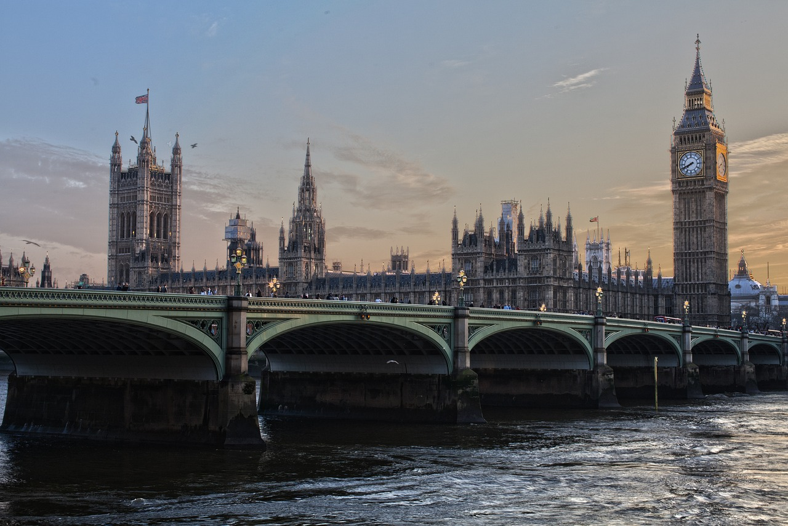

London ist die Hauptstadt des Vereinigten Königreiches und Englands.Die Stadt liegt an der Themse in Südostengland. Das heutige Verwaltungsgebiet mit 33 Stadtbezirken entstand im Jahr 1965 durch die Gründung von Greater London. Dort lebten 2019 rund 8,96 Millionen Menschen, davon rund 3,3 Millionen in den 13 Stadtbezirken Inner Londons.
Im Jahr 50 n. Chr. von den Römern als Londinium gegründet, wurde die Stadt nach der normannischen Eroberung 1066 Hauptstadt und Königssitz des Königreiches England. Bereits im Mittelalter entwickelte sich die Stadt zu einem bedeutenden internationalen Handelsplatz.
London erstreckt sich etwa 44,3 Kilometer entlang der schiffbaren Themse und liegt durchschnittlich 15 Meter über dem Meeresspiegel. London entstand aus einer Siedlung am Nordufer, der heutigen City of London. Die London Bridge war bis 1739 die einzige Brücke über den Fluss.

Südostengland mit der Hauptstadt London, der klimatisch meistbegünstigte Teil Großbritanniens, unterscheidet sich in vielerlei Hinsicht von den anderen Teilen der Insel. Die geologische Struktur wird durch die mesozoischen Sedimente bestimmt, die eine großzügig gegliederte Schichtstufenlandschaft entstehen ließen. Ihre Höhen ragen nirgends hoch auf, so dass der gesamte Raum die klimatischen Vorteile des Südostens genießt. Historisch profitierte London von seiner Lage inmitten einer Ackerbauregion. Der kontinentnahe Südosten galt von jeher als Schwergewicht des Inselreiches. Hier fassten die vom Festland kommenden Eroberer – Römer, Sachsen, Normannen – zuerst Fuß. Auch als mit der Entdeckung Amerikas und der Entwicklung der Überseeschifffahrt die Außenseiten der Insel infolge ihrer günstigeren Lage stärker belebt wurden, konnte sich das alte Kulturzentrum behaupten. London blieb das Tor zur Insel.
London gliedert sich in 32 Stadtbezirke: 1City of London/ 2City of Westminster/ 3Kensington and Chelsea/ 4Hammersmith and Fulham/ 5Wandsworth/ 6Lambeth/ 7Southwark/ 8Tower Hamlets/ 9Hackney/ 10Islington/ 11Camden/ 12Brent/ 13Ealing/ 14Hounslow/ 15Richmond/ 16Kingston/ 17Merton/ 18Sutton/ 19Croydon/ 20Bromley/ 21Lewisham/ 22Greenwich/ 23Bexley/ 24Havering/ 25Barking and Dagenham/ 26Redbridge/ 27Newham/ 28Waltham Forest/ 29Haringey/ 30Enfield/ 31Barnet/ 32Harrow/ 33Hillingdon